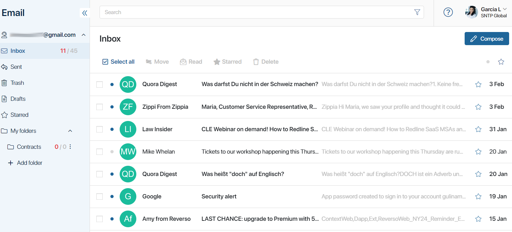
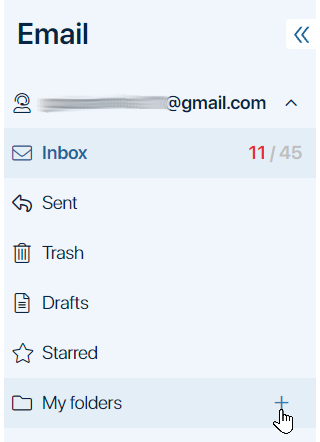
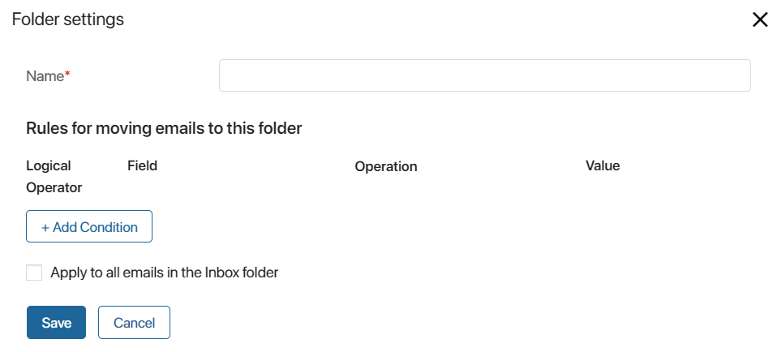
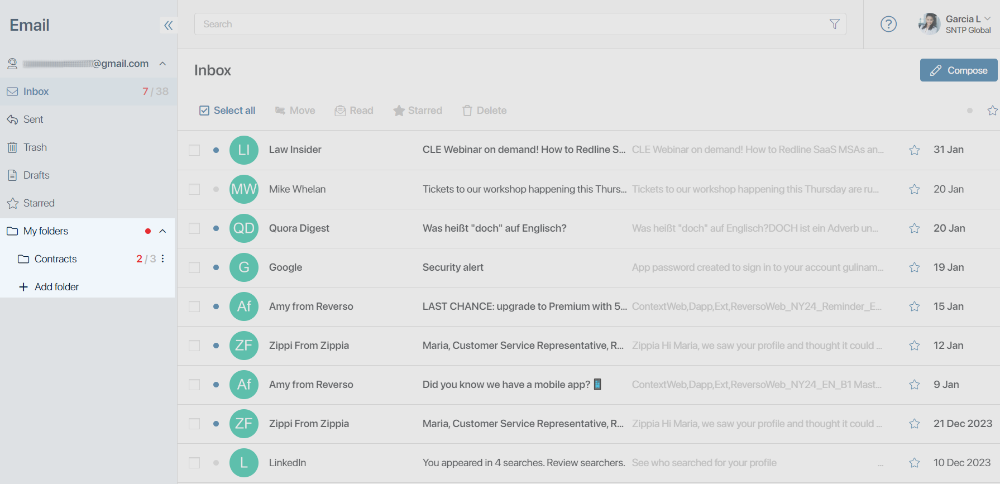

As in other email clients, emails in BRIX are organized into Inbox, Sent, Trash, Drafts, and Starred folders.
In each folder, there are several labels available: you can mark emails as read or unread and starred or unstarred. You can also delete or restore them. To do that, follow these steps:
- Check the boxes next to one or several emails in the list or select all the emails loaded on the page by clicking Select all on the top panel.
- Buttons at the top of the page will become available. Click a button to apply the chosen label or action to all selected emails.

The buttons available will vary depending on the folder that is opened and the current status of the selected emails.
- Move. Use the option to move the incoming message to one of the folders in My folders or to the trash.
- Read. When you mark an email as read, it will not be included in the count shown next to the folder name. The symbol will be displayed next to the email. When you open an unread email, it is automatically marked as read.
- Unread. Mark an email as unread if you want to come back to it later. It will be considered new in the email count. You will see the symbol next to it.
- Starred. Mark an email as starred to add it to the Starred folder. The email will be marked with the symbol. You will see the same symbol in the upper right corner of the email’s page.
- Unstarred. If a starred email is not important anymore, unstar it. It will no longer appear in the Starred folder.
- Delete. Click this button to move an email to the trash. In the Trash folder, you can apply this button to an email again to delete it from the workspace completely. Please note, that attachments stored in the Files workspace will also be deleted.
- Restore. Go to the Trash folder and apply the action to cancel the deletion of the email. The restored email will appear in the folder from which it was deleted.
- Empty Trash. Click this button to delete all emails from the Trash folder and free up the disk space they occupy. The emails deleted in the BRIX interface will remain in the mail client. Please note, that to delete emails associated with an item, you must first delete the link.
When you click Read, Unread, Starred, and Unstarred, the email will receive a similar status in the mail client.
Move emails to a folder automatically
You can create your own folders in the Email workspace to organize your emails. For example, you can move all correspondence with contractors to a separate folder.
Set up automatic moving of emails to folders:
- In the Email workspace, next to My Folders, click the plus sign.
 - In the opened window, fill in the fields.

- Name. Specify the name of the folder.
- Rules for moving emails to this folder. If you want incoming emails to be automatically moved to the created folder, click +Add Condition, and specify sorting rules:
- Logical Operator. It is a logical operation that is used to check multiple conditions:
- AND. Both conditions must be met to move an email.
- OR. At least one condition must be met.
- AND NOT. The first condition must be met and the second condition must not be met.
- OR NOT. Both conditions must not be met.
- Logical Operator. It is a logical operation that is used to check multiple conditions:
Please note, that the conditions are checked in the order in which they are listed in the moving rule settings.
- Field. Select the property by which the email will be automatically moved: Subject, Text, From, To, Copy, Attachment.
- Operation. Specify a comparison operator to check the condition.
- Value. Enter the value to be checked.
- Apply to all emails in the Inbox folder. Check this option to sort all emails in the Inbox folder. If the option is disabled, only new incoming emails will be sorted.
- Click Save.
After that, the created folder will be displayed in the left menu of the workspace. All incoming emails that meet the conditions will be automatically sorted into this folder.

Found a typo? Select it and press Ctrl+Enter to send us feedback